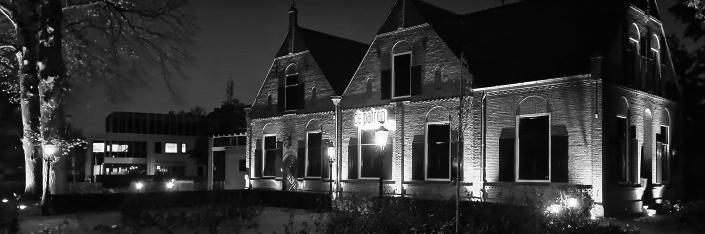

Lunchen
dinsdag t/m zondag, 12.00 – 15.30
Zes dagen per week voor een lunch in het restaurant, en bij mooi weer op ons terras. Komt u met een grote groep of heeft u speciale wensen? Vraag gerust naar de mogelijkheden.

Kerklaan 1, Twello | in het patronaat van 1916
Lunchen, dineren, borrelen en gezelligheid. Goede producten, mooie gerechten en service met een glimlach.
Dinsdag t/m zondag vanaf 12.00 uur
Voor de kerstdagen hebben we een Kerstbrunch (vanaf 11.30 uur) en een Kerstdiner (vanaf 17.00 uur) samengesteld. Zeker zijn van een plekje? Reserveer alvast. Zodra wij uw reservering hebben bevestigd, staat uw plek voor u klaar.
Gasterij De Patron is een trendy en stijlvol restaurant, vlak bij het centrum van Twello. Bij ons staan goede producten, mooie gerechten en ‘service met een glimlach’ voorop. Kom genieten in ons sfeervolle pand met groot terras, moderne wifi en oplaadpunten voor de fiets.
dinsdag t/m zondag, 12.00 – 15.30
Zes dagen per week voor een lunch in het restaurant, en bij mooi weer op ons terras. Komt u met een grote groep of heeft u speciale wensen? Vraag gerust naar de mogelijkheden.

vanaf 17.00, keuken tot 20.00
Kies van de menukaart of ga voor shared dining: een mooi menu om te delen. We werken zoveel mogelijk met dagverse, met zorg geselecteerde producten. Tijdens de feestdagen serveren we vaak speciale menu’s; houd ook onze social media in de gaten voor seizoensspecials.

vrijdag en zaterdag café tot 00.00
In onze bar kunt u altijd terecht voor een kop koffie, een goed glas wijn, een tapbiertje of een cocktail van onze cocktailkaart, met diverse borrelhapjes. Op vrijdagmiddag met je collega’s het weekend inluiden? Dat kan!

Feestjes, partijen, vergaderingen of koffietafels: alles is mogelijk. Een speciale leeftijd, een huwelijksjubileum of een andere mijlpaal vieren met familie, vrienden of collega’s? Klein en intiem, of groots met een waanzinnige band: we hebben de perfecte zaal voor ieder gezelschap.
Afhankelijk van de grootte van uw gezelschap en uw wensen kunt u exclusief en privé gebruikmaken van onze ruimtes voor besloten groepen. Nieuwsgierig naar de mogelijkheden? Neem contact op of loop vrijblijvend binnen, dan kan de voorpret al beginnen.
Mail over uw feest of vergaderingWie googelt op patron vindt ‘eigenaar van een zaak’, ‘leider van het peloton’ en ‘beschermheer’. Geen van alle van toepassing. Onze naam komt van het gebouw zelf.
Het pand doet dienst als school.
Het wordt het patronaatsgebouw (parochiehuis) van de Rooms-Katholieke parochie Duistervoorde. Daar komt onze naam vandaan.
Het patronaat gaat verder onder de naam Recrea.
Het gebouw krijgt de functie van restaurant.
Het restaurant heet voortaan De Vier Seizoenen.
Een verwoestende brand legt het gebouw grotendeels in de as.
De zaak heropent als Bar Bistro De Patron.
De Twellose ondernemer Ronald Lieferink neemt de zaak over en noemt haar Gasterij De Patron. Nieuwe apparatuur, en het terras wordt flink verruimd.
Einde van de tweede coronalockdown: vanaf dan volop gasten in het restaurant aan de Kerklaan.
De Patron hoort bij Duistervoorde, het deel van Twello waar de St. Martinuskerk zo’n prominente plek inneemt. In een document uit 1357 duikt de naam ‘Duestervoert’ voor het eerst op: een landgoed met een kasteel. Het kasteel werd in 1863/1864 vrijwel volledig afgebroken en herbouwd als monumentaal landhuis, sinds 1878 Huis Duistervoorde. Pal daarnaast staat de neogotische St. Martinuskerk, gebouwd in 1887 en ingezegend in 1888.
Wilt u een tafel reserveren? Bel ons of stuur een mail. Bijzondere (dieet)wensen horen we graag vooraf.
Gasterij De Patron
Kerklaan 1
7391 AN Twello
Solliciteren? Bekijk de vacatures of stel uzelf voor via info@gasterijdepatron.nl.